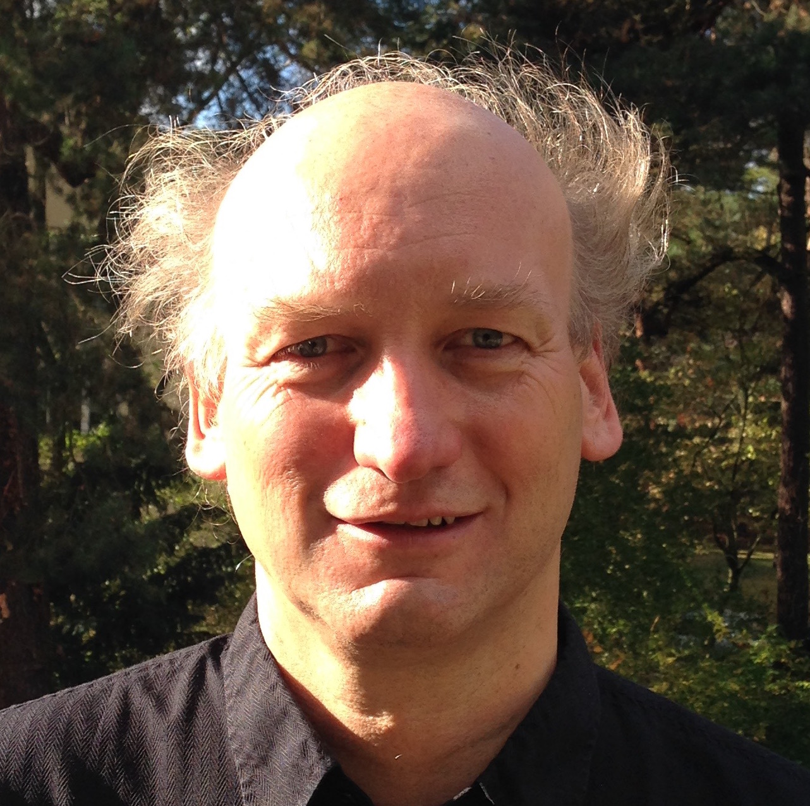

Keynote Speakers
Kai Uwe Barthel
Institute for Media and Computing, HTW Berlin, Germany

Title: Scalable Methods for Visual Data Representation, Search, and Visualization
Abstract: Large visual datasets are increasingly common, demanding efficient systems for retrieval and exploration. This talk will present recent methods for handling such data, including leveraging large visual encoders to generate compact, high-quality descriptors. It will cover strategies to enhance cross-modal retrieval and explore approximate nearest neighbor search techniques, focusing on graph-based methods for dynamic datasets. Visualization approaches for high-dimensional data, like grid-based sorting, will also be demonstrated for intuitive navigation. Grid sorting requires efficient methods for such large datasets. Therefore, we introduce a parameter-efficient approach to learning permutations, requiring only N parameters for N objects. This method iteratively refines permutations, offering scalability for applications such as image sorting, graph optimization, or combinatorial tasks like solving Sudokus.
Bio: Kai Uwe Barthel is a professor at the Institute for Media and Computing at HTW Berlin, heading the Visual Computing Group. His work focuses on technologies for simplifying media retrieval, including image understanding, retrieval, metric learning, and visual exploration. During his PhD at TU Berlin, he specialized in fractal image compression and later led a 3D-video coding research project. As head of R&D at N-Tec Media and LuraTech Inc., he contributed to the JPEG2000 standard, developing advanced image and video compression solutions. Since 2001, he has taught image analysis, machine learning, and information retrieval at HTW Berlin. In 2009, he founded pixolution, a company specializing in visual image search. Prof. Barthel holds numerous patents, publications, and awards. More information can be found at: https://visual-computing.com/
Franco Maria Nardini
CNR-ISTI, Italy

Bio: Franco Maria Nardini is a Senior Researcher with ISTI-CNR in Pisa, Italy. His research interests focus on Web Information Retrieval and Machine/Deep Learning. He authored over 100 papers in peer-reviewed international journals, conferences, and other venues. He has been General Co-Chair of ECIR 2025, Program Committee Co-Chair of SPIRE 2023, Tutorial Co-Chair of ACM WSDM 2021. He is a co-recipient of the ECIR 2025 Best Student Short Paper Award, the ACM SIGIR 2024 Best Paper Runner-Up Award, the ECIR 2022 Industry Impact Award, the ACM SIGIR 2015 Best Paper Award, and the ECIR 2014 Best Demo Paper Award. He coordinated activities in several EU and IT research projects. He is a member of the editorial board of ACM TOIS and a PC member of SIGIR, ECIR, SIGKDD, CIKM, WSDM, IJCAI, and ECML-PKDD. He currently teaches "Information Retrieval" in the Computer Science and AI Master Degrees of the University of Pisa.